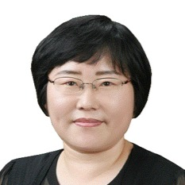
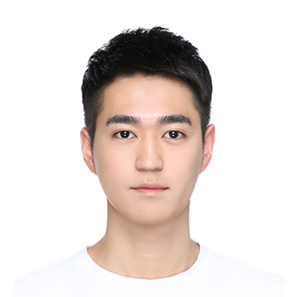
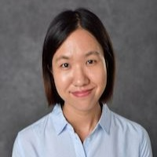
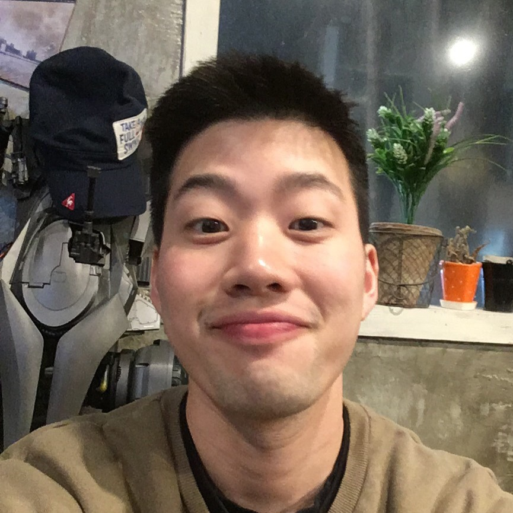
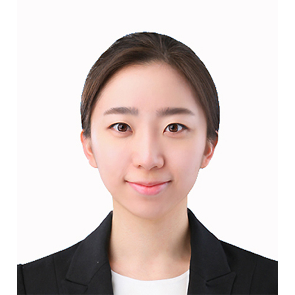
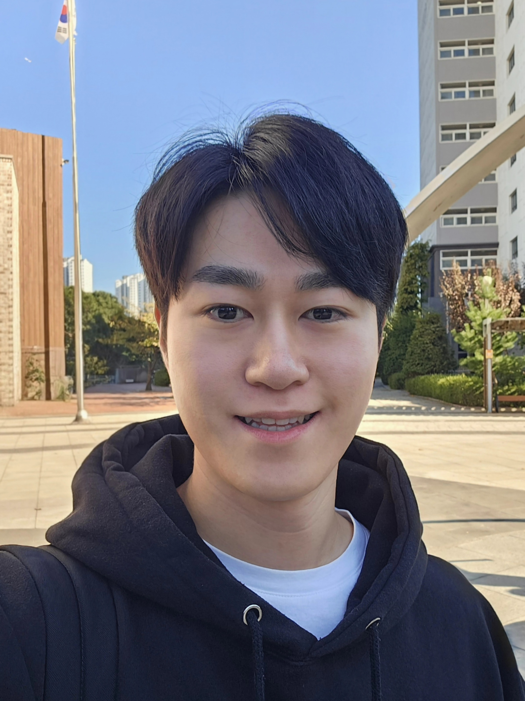
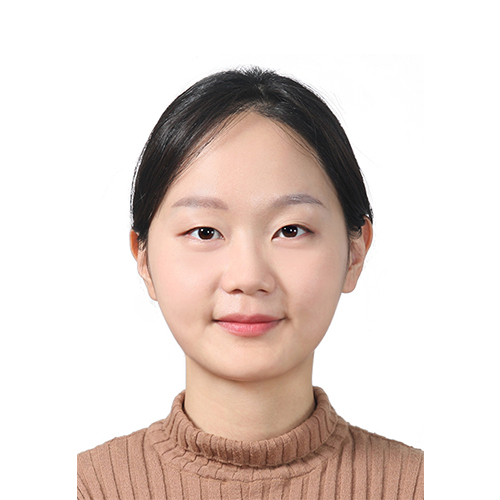
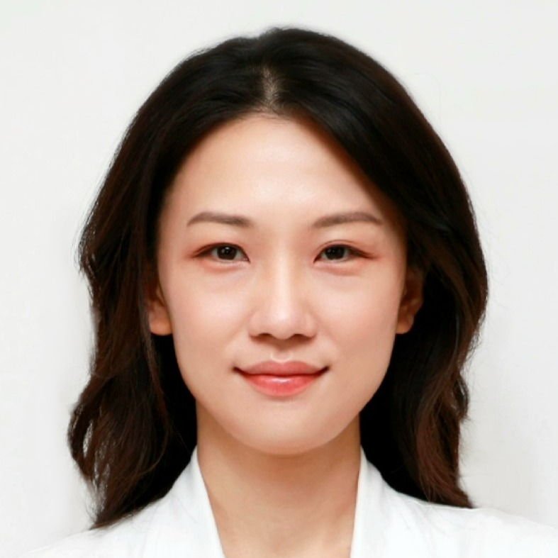

Kyunga Kim, PhD
Principal Investigator; Director & Professor, Biomedical Statistics Center, Samsung Medical Center
BDS Lab
Principal investigator, current members, advisors, and alumni of BDS Lab.

Principal Investigator; Director & Professor, Biomedical Statistics Center, Samsung Medical Center






